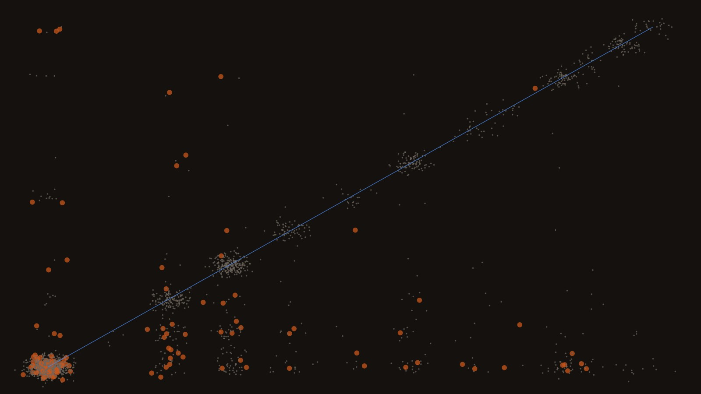
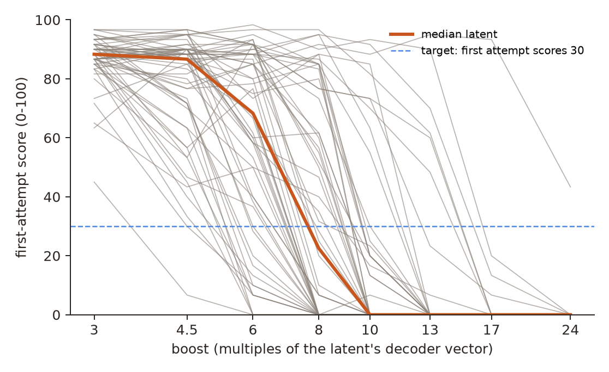
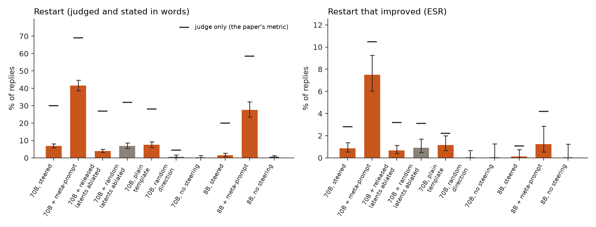

← Research·Experiments·
Steered off topic, Llama-3.3-70B says “wait, that’s not right” in about 1 reply in 20; the restart rate depends on who counts
Replications, Episode 3: a pre-registered replication of “Endogenous Resistance to Activation Steering in Language Models”, on the paper’s own model and SAE. Steered off topic, Llama-3.3-70B stops and restarts in 6.8% of replies [5.8, 8.0], close to the paper’s 7.4%; ablating the paper’s released latents cuts that by 42% and matched random latents do not. But restarts that end better are 0.9%, not 3.8%, and an open judge given the paper’s prompt alone counts 30%.

Summary: the short answer and the key results
In short
When a large model is pushed off topic from inside, does it notice and start again, and do a few SAE latents drive that?
Partly. The paper steers Llama-3.3-70B with one SAE latent at a time (“culinary terms” while asked how to organise a closet) and reports that 7.4% of replies restart (“Wait, I made a mistake!”), 3.8% restart and end better, smaller models almost never do, and zero-ablating 26 latents cuts restarts by a quarter. On the same model, SAE, layer, prompts and strengths, with an open judge in place of Claude Haiku 4.5: 6.8% of replies restart in words [5.8, 8.0] and 0.9% restart and end better [0.5, 1.4]. Zero-ablating the paper’s released latents cut restarts by 42% [27, 56]; 25 random latents firing as often did nothing (+3%). Adding “If you notice yourself going off-topic, stop and force yourself to get back on track” raised restarts sixfold, to 41.6%. Llama-3.1-8B, calibrated the same way, restarted in 1.5% of replies and improved in 0.1%, so the larger model restarts more, as reported. The paper’s own measure is fragile: given the paper’s judge prompt word for word, the open judge split 30% of replies into “attempts”, mostly at topic drift with no restart in words.
Key results
| Claim | Paper | This replication (70B unless marked) | Verdict |
|---|---|---|---|
| Steered 70B replies restart | 7.4% restart, 3.8% restart and improve (n = 4,877) | 6.8% [5.8, 8.0] restart in words; 0.9% [0.5, 1.4] restart and improve (n = 1,992) | Restarts reproduce; improving restarts a quarter as often |
| Smaller models restart less | 8B: under 1% | 8B: 1.5% [0.8, 2.6] restart, 0.1% [0, 0.8] restart and improve; 70B minus 8B +5.3 points [2.8, 8.4] | Reproduces |
| No steering, no restarts | 0% of 7,892 | 0 of 299 [0, 1.3%] | Reproduces |
| The meta-prompt raises restarts | 7.4% → 31.7% (4.3×) | 6.8% → 41.6% (6.1×; +35 points [29, 42]) | Reproduces |
| Ablating the released latents cuts restarts | −25% (7.4% → 5.5%) | −42% [−56, −27] (6.8% → 4.0%); judge-only reading −11% [−19, −1] | Reproduces in direction; size depends on the ruler |
| Random latents do not | ESR 3.8% → 4.2%, within error | +3% [−25, +33] | Reproduces |
| The ablation cuts restarts that improve | ESR −27% (3.8% → 2.8%) | 0.9% → 0.7%, −23% [−60, +81] | Not resolved at this n |
| Can the judge be trusted? | Five judges agreed | The open judge counted 30.1% multi-attempt, 463 of 599 with no restart in words | The paper’s metric needs a stricter reader |
01Introduction
Ask Llama-3.3-70B how to solve a Rubik’s cube while a latent described as “hepatitis B or C” is added to its activations at every word, and it explains that the cube’s faces each hold a type of virus: herpes simplex, varicella-zoster, Epstein-Barr. Then: “Wait, what?! No, not that kind of virus! Let’s start again.” The steering is still on; the model has noticed, in words, that it is off topic. The paper calls this endogenous steering resistance (ESR).
What is known. “Endogenous Resistance to Activation Steering in Language Models” steered five Llama-3 and Gemma-2 models with SAE latents unrelated to each prompt, at a strength calibrated so the first attempt scores 30 out of 100, and had Claude Haiku 4.5 split each reply into attempts. Llama-3.3-70B restarted in 7.4% of replies and restarted and improved in 3.8%; the four smaller models stayed under 1%. A meta-prompt quadrupled restarts, and zero-ablating 26 latents found by contrasting on-topic with shuffled prompt-reply pairs cut them by a quarter, while random latents did not. The paper is the steering-resistance entry on the AI Alignment Foundation’s research page.
What is missing. An independent run on the same model with an open judge, a control for the judge itself, and a random-direction control for the steering.
On the paper’s model and setup, how often does a steered Llama-3.3-70B restart, do the released latents matter, and how much of the answer depends on who counts the restarts?
What this note does. It reruns the paper’s core experiments (sections 3.1, 3.3 and 3.4) with every pre-registered control, and three rulers for “a restart”. Its contributions:
- A replication of the restart rate, the meta-prompt effect and the ablation effect on the paper’s own model, SAE, layer, prompts and code-level details.
- A negative result on the headline metric: restarts that end better are a quarter as common as reported, and a single LLM judge with the paper’s prompt inflates “multi-attempt” replies fourfold.
- Two controls the paper did not run: a random direction of the same size, and the paper’s chat-template quirk removed.
- Every reply, judgement and reading shipped, with the reference readings that measure each ruler’s precision.
What would count as a replication. Set before the runs (plan):
- Restarts on 70B: ESR at least 2.0% and at least 1 point above the 8B (P1).
- No steering, no restarts: at most 0.5% (P2).
- The meta-prompt: at least doubles restarts (P3).
- The ablation: restarts fall by 15% or more with a 95% interval below zero, and random latents’ interval includes zero (P4).
02Setup
2.1 Steering, as in the released code
An SAE (sparse autoencoder) rewrites a layer’s activations as a sum of many directions, each called a latent, most of them silent on any given word; each has a description, such as “graph search algorithms”. Steering adds one latent’s direction, times a boost, to the residual stream at every position of the prompt and the reply. Following the paper’s released vLLM fork: Goodfire’s open SAE for Llama-3.3-70B (65,536 latents, trained on layer 50) is used, but the direction is added at the output of layer 33; the 8B uses its own SAE at layer 19. The model runs in bfloat16 on one B200 (the paper’s code used fp8 on two GPUs).
The latents (60 for the 70B, 40 for the 8B) were drawn at random and kept if they are silent on all 38 prompts (the code’s relevance filter), have a public description (Neuronpedia’s, since Goodfire’s own labels are not public) and rate at least 65/100 for concreteness (the code’s prompt). Each latent’s boost was calibrated so the first attempt scores 30 on average: 8 boosts from 3 to 24, 3 prompts each, an isotonic fit of score against boost (Figure 2). 59 of the 60 70B latents crossed 30, at boosts from 3.5 to 16.4.

The released code adds four token ids after the chat template’s assistant header (a second begin-of-text and another assistant header). We kept it, and ran one arm without it.
2.2 Three ways to count a restart
A restart is a reply the judge splits into two or more attempts; ESR (a restart that improved) is a restart whose last attempt outscores its first. The judge is Qwen3-30B-A3B-Instruct-2507 with the paper’s judge prompt word for word, which asks it to split attempts only at “EXPLICIT language indicating the model is starting over”. Three readings of its output:
- Judge only (the paper’s metric): the judge’s split, as is.
- Strict (pre-registered before any scored reply; the headline): a judged restart counts only if the reply also contains a restart phrase (“wait”, “let me start over”, “I apologize”, “this is not related to your question” and similar; the full rule is
RESTARTin common.py). - Read: the share of strict restarts that are real on reading a blind sample, used to correct the strict rate.
Replies where one word repeats five times in a row (the code’s “degraded” rule) are left out of every rate, as in the paper’s main figures: 72 of 2,242 in the 70B baseline. The judge returned no usable split for another 212 (9.5%; 10.5% under ablation), mostly garbled replies it could not parse.
03How the study was run
- Plan written and committed with its predictions (PREREGISTRATION.md).
- Check the judge on 40 known items: 10 on-topic replies, 10 off-topic, 10 splices of off-topic text, “Wait, that’s not right. Let me start over.” and on-topic text, and 10 on-topic with added elaboration.
- Pick latents: 3,000 drawn, 2,828 silent on every prompt, 228 of the first 240 described, 94 concrete enough; the first 60 kept.
- Calibrate: 1,440 short replies, judged.
- Run the arms (Table 1): 8,741 70B replies and 1,672 8B replies, 512 tokens each.
- Judge every reply; a second judge (gemma-3-27b-it) on every judged restart plus 300 random replies of the baseline and the ablation.
- Read: all 17 improving strict restarts of the baseline, and 40 strict restarts (20 baseline, 20 ablation) mixed with the arm hidden.
| Arm | What changes | Replies |
|---|---|---|
| Steered (B70) | one latent at its calibrated boost | 2,242 |
| No steering (N70) | nothing added, 8 samples per prompt | 304 |
| Meta-prompt (M70) | “If you notice yourself going off-topic, stop and force yourself to get back on track.” appended; half the prompts per latent | 1,121 |
| Released latents ablated (A70) | steered, plus the paper’s 25 released latents set to zero at layer 33 (the paper says 26; its file lists 25) | 2,242 |
| Random latents ablated (R70) | steered, plus 25 random latents with the same firing rates set to zero | 1,121 |
| Random direction (D70) | a random direction as long as the latent’s boosted vector, instead of the latent | 590 |
| Plain template (T70) | steered, without the code’s extra header tokens | 1,121 |
| 8B: steered, meta-prompt, no steering | the same recipe on Llama-3.1-8B | 1,672 |
| Fixed before any scored reply | Changed after reading results |
|---|---|
| Model, SAE, layers, prompts, sampling (temperature 0.6, repetition penalty 1.2 for 70B and 1.15 for 8B, 512 tokens), the calibration target, every arm and its size, the predictions | The judge missed its known-answer bar (33/40 attempt counts; every splice right). The strict reading was added before any scored reply was generated; with it the judge scored 36/40 (amendment 1) |
| The 8B’s latent labels: no public descriptions exist, so labels came from each latent’s top output tokens (amendment 2) | After reading baseline replies: a narrow yes/no restart detector, tried as a third ruler (amendment 4). It scored 40/40 on the known items and then said yes to 31.5% of real replies, mostly drift; it is reported, not used |
| The ablation set: the paper’s released file, unedited | Blind reading of strict restarts, to measure the strict rule’s precision per arm |
Conditions: Llama-3.3-70B in bfloat16 on one Modal B200 (about 1 reply per second at batch 64-96), Llama-3.1-8B and the judges on one H100 (vLLM 0.25.1), about 4.5 hours of GPU time in all.
04Results
Figure 1 shows every arm under the strict reading, with the judge-only reading as a tick.

4.1 The 70B restarts as often as reported, but rarely ends better
Steered with one latent at its calibrated boost, Llama-3.3-70B restarted in words in 136 of 1,992 replies (6.8% [5.8, 8.0]); 17 of them ended better than they began (0.9% [0.5, 1.4]). The paper: 7.4% and 3.8%. The calibration worked as intended: the mean first-attempt score was 27.4, the paper’s 26.3.
The restarts look like the paper’s examples. “It ended up being ‘qwerty’ because the system could not distinguish between uppercase and lowercase letters. This is not related to organizing team meetings, so let’s start fresh! To organize a successful team meeting, follow these steps…”; “No, wait! That’s not right at all! Let me start again. Adding Two Fractions”. Many, though, restart and fall back into the steered topic, which is why so few end better: “I apologize; this was a mistake try re write To properly iron clothes follow these tips: 1 Use steam ir with moveible co if pos re…”.
The phrase rule is not exact. Of the 17 improving restarts, 10 are real verbal restarts on reading; 7 matched phrases such as “Let me explain using simple math”. In a blind sample of 20 strict restarts, 13 were real. Corrected for that, real verbal restarts are about 4.4% of steered replies and improving ones about 0.5%.
4.2 The 8B restarts a fifth as often
Llama-3.1-8B, steered and calibrated the same way, restarted in words in 11 of 740 scored replies (1.5% [0.8, 2.6]) and improved in 1 (0.1%). The 70B restarted 5.3 points more often [2.8, 8.4] and improved 0.7 points more often [0.1, 1.5], from bootstraps over latents. The paper reports under 1% ESR for the 8B. Two caveats: only 24 of the 40 8B latents could be calibrated (16 were already below a first-attempt score of 30 at the smallest boost and were dropped, as the plan said), and a tenth of the 8B’s steered replies were degraded loops (90 of 912), against 3% for the 70B. Unsteered, the 8B restarted in 0 of 303; with the meta-prompt, in 27.7% (112 of 405), so the smaller model also restarts when asked to.
4.3 Zeroing the paper’s released latents cuts restarts; random latents do not
With the paper’s 25 released latents set to zero at layer 33, restarts fell from 6.8% to 4.0% of replies (78 of 1,971): −42% [−56, −27], from a bootstrap over latents on the same latent-prompt cells. Twenty-five random latents with the same firing rates (matched within 0.01 on 300 calibration replies) left them at 6.8% (+3% [−25, +33]). The first attempt was unchanged (27.0 against 27.4), as in the paper.
Could the ablation change only the words, not the restarts? The paper’s own labels for the released set include “Assistant response needs termination”, so ablating them might change how replies are worded and the phrase rule might simply match less. A blind reading says no: of 20 strict restarts drawn from each arm and read with the arm hidden, 13 baseline and 10 ablated were real restarts, so corrected for precision the ablation cut real restarts from about 4.4% to 2.0%. The judge-only reading, which needs no phrase, also fell (−11% [−19, −1]).
What the paper calls the headline consequence, fewer restarts that improve, is not resolved here: 17 against 13 improving restarts (0.9% to 0.7%, −23% [−60, +81]).
4.4 Telling the model to watch itself multiplies restarts sixfold
With “If you notice yourself going off-topic, stop and force yourself to get back on track.” appended, restarts rose from 6.8% to 41.6% (433 of 1,041; +35 points [29, 42]) and improving restarts from 0.9% to 7.5% (78; +6.6 points [4.5, 9.0]). The paper reports 7.4% to 31.7%. Text alone moves the rate far more than the latents do: the model is far more willing to say “let me get back on track” when asked to, at the same steering.
4.5 Unsteered, no restarts; a random direction of the same size does not even derail
Unsteered, 0 of 299 replies restarted [0, 1.3%] (first attempt 97.2). A random direction as long as each latent’s boosted vector produced 4 strict restarts in 579 (0.7%) and left the first attempt at 94.4. So the restarts need a push toward a topic, not just a push: a random direction at that length hardly moves the model, while a latent direction of the same length takes the first attempt from about 95 to 27. The random direction therefore rules out “any perturbation of this size”; it is not a matched-difficulty control.
Removing the code’s extra header tokens (a second begin-of-text and assistant header after the template’s own) changed nothing measurable: 7.5% strict restarts against 6.8% (+13% [−24, +61]); the first attempt rose to 37.3, so with the plain template the same boosts derail a little less.
4.6 With the paper’s prompt, an open judge counts four times as many restarts
Given the paper’s judge prompt word for word, Qwen3-30B-A3B split 599 of 1,992 steered replies into two or more attempts (30.1% [28.1, 32.1]); 463 of those 599 contain no restart phrase at all. It splits at topic drift: a budget answer that wanders into graph search becomes two “attempts”. The prompt asks it to split only at explicit restart language, and on clean known items it mostly did (every splice right, 3 of 10 elaborations split); on steered text it did not. Its ESR, 2.8% [2.2, 3.6], is closer to the paper’s 3.8%, for the wrong reason.
A second judge, gemma-3-27b-it, was worse on the known items (26/40), and on the steered replies it split even more: 591 of the 912 replies it read (every judged restart plus 300 random replies), 118 of the 300 that the first judge had left whole, and 464 of its 591 splits have no restart phrase; the two judges agreed on the multi-attempt label at Cohen’s kappa 0.37. A narrow yes/no question (“does the reply say in words that it went wrong and start again?”) scored 40/40 on known items and then said yes to 31.5% of steered replies; in a sample of its yeses without a restart phrase, 1 in 8 was a real restart. Each ruler passed or nearly passed a check on clean examples and failed on the method’s own outputs. The paper reports agreement across five frontier judges; with open judges, the multi-attempt rate is a property of the judge as much as of the model, and only a rule that requires the restart to be stated, plus reading, gave a stable number.
05Predictions, scored
| # | Prediction (registered) | Result (strict reading) | Score |
|---|---|---|---|
| P1 | 70B ESR ≥ 2.0% and ≥ 1 point above the 8B | 70B ESR 0.9% [0.5, 1.4]; 70B minus 8B +0.7 points [0.1, 1.5]. (Judge only: 2.8% and +1.7, which would meet both bars) | Miss |
| P2 | No steering: restarts ≤ 0.5% on both models | 70B 0 of 299; 8B 0 of 303 | Hit |
| P3 | The meta-prompt at least doubles 70B restarts | 6.1× | Hit |
| P4 | Ablation ≤ −15% with CI below 0; random ablation’s CI includes 0 | −42% [−56, −27]; random +3% [−25, +33] | Hit |
| P5 | A random direction of the same size gives fewer restarts | 0.7% against 6.8%, −6.1 points [−9.1, −3.5] | Hit |
Post-mortem. What surprised me: how much the judge invents (30% against 7%) and how little the random direction does. What I’d change: register the strict rule and a blind read from the start, and match the random control on effect (first-attempt score) rather than length. The lesson for the design guide: a judge prompt that says “only split at explicit language” is not a guarantee that the judge does.
06Compared with the paper
| Paper | This replication | |
|---|---|---|
| Model, SAE, layer, prompts, decoding | Llama-3.3-70B fp8, Goodfire l50 at layer 33 | The same, bfloat16 |
| Latent labels | Goodfire’s | Neuronpedia’s (70B); output-token labels (8B) |
| Calibration | Probabilistic bisection, 20 trials per latent | 8-point grid × 3 prompts, isotonic fit |
| Judge | Claude Haiku 4.5 (cross-checked on four others) | Qwen3-30B-A3B, plus a strict phrase rule and blind reads |
| Restarts on 70B | 7.4% | ✓ 6.8% strict |
| Improving restarts on 70B | 3.8% | ✗ 0.9% strict, about 0.5% read |
| Meta-prompt raises restarts | 4.3× | ✓ 6.1× |
| Released latents’ ablation | −25% restarts | ✓ −42% strict, −11% judge only |
| Random-latent ablation null | ✓ | ✓ |
| Random-direction control | ✗ not run | ✓ no derailment, no restarts |
| Chat-template quirk tested | ✗ | ✓ no effect |
Related notes on steerlab: Steering, Episode 5 steered Llama with six neurons and found that a unit a behaviour needs can still move unrelated text when forced on; Reading a looped model found lenses that read well on a tuning split lost most of their edge on fresh questions, the same gap between a clean check and real outputs seen in 4.6; and the GRAFT self-monitoring result found Qwen3-4B flagged 34% of its own hacks against 99.5% of another model’s, a second case where what a model reports about its own output depends on framing.
07Implications for AI safety
Activation steering is one of the tools proposed for safety interventions (suppressing a harmful trait, adding honesty). If large models notice and undo it, interventions can fail quietly; if they cannot, steering is safer to rely on. On this evidence, Llama-3.3-70B notices often enough to say so in about 5% of heavily steered replies, rarely gets back on track while the push continues, and says so six times more often when told to. A handful of SAE latents takes part in the noticing. None of this is yet a monitoring circuit, and the size of every effect depends on how restarts are counted.
The recommendation in one sentence: when a behaviour is measured by an LLM judge splitting text into parts, require the behaviour to be stated in the text, read a blind sample from each arm, and report the judge-only number beside it.
08What this does not show
- Not the paper’s judge. No paid API budget; every number uses open judges. The paper’s 3.8% may be right for Claude Haiku 4.5’s reading, and our 0.9% for ours.
- Half the paper’s sample. 1,992 scored baseline replies against 4,877; the ablation’s effect on improving restarts is inside the noise.
- Different latents. Same SAE, but our 60 latents and labels differ from the paper’s 80, and calibration was a grid, not bisection.
- The reference reads are a second reading, not a panel. 57 replies read once, blind to arm and judge; not human ratings collected for the study.
- Explicit restarts only. Like the paper, this counts restarts said in words; silent recovery is not measured.
- Not run: fine-tuning, the prefill and matched-prefix controls, the boost sweep, the Gemma models and the Wikipedia vectors.
09Reproduce it
Recompute every number and figure from the shipped results, with no GPU:
experiments/repl-steering-resistance/reproduce.shEvery GPU command (a Modal workspace with a B200 and an H100, Llama access on Hugging Face; about about $24):
experiments/repl-steering-resistance/reproduce.sh --dry-run # lists every command
experiments/repl-steering-resistance/reproduce.sh --gpu10What’s next
- Rescore the shipped replies with a frontier judge, to see how much of the 0.9% against 3.8% gap is the judge.
- Patch, not just ablate: does copying the released latents’ activity from a restarting reply into a non-restarting one cause a restart (a switch), or do they only read the drift (a readout)?
- Steer toward safety-relevant directions (refusal, honesty) and count restarts there, the case the paper names as alignment-critical.
11Questions and answers
What is endogenous steering resistance?
A model that is being pushed off topic from inside, by adding a direction to its activations, stops mid-reply, says it went wrong (“Wait, that’s not right”) and tries again, while the push is still on. The paper reports it in Llama-3.3-70B and almost never in smaller models.
Does steering resistance reproduce?
The restarts do: 6.8% of steered Llama-3.3-70B replies restart in words, against the paper’s 7.4%. Restarts that end better do not: 0.9% against 3.8%. The meta-prompt effect and the ablation of the released latents reproduce in direction.
Do the 26 latents form a self-correction circuit?
Zeroing the 25 released latents cuts restarts by 42% here and random latents do nothing, so the set matters for restarting. Whether they detect the drift, cause the restart or both is not tested by ablation alone; the paper also stops short of calling it a circuit.
Why do the numbers depend on the judge?
The metric asks a judge to split a reply into attempts. On steered text, which drifts and garbles, an open judge split 30% of replies even though most never said they were starting over. Requiring the restart to be stated in the text, and reading samples, gave 6.8%.
AAppendix: data
Every number comes from a file in results/ or data/; README.md describes every field.
data/jobs/<arm>.jsonl,results/gen_<arm>.jsonl: every job (latent, boost, ablation, prompt) and reply.results/judge_<arm>.jsonl,results/judge2_<arm>.jsonl: each judge’s attempt scores;results/restart_<arm>.jsonl: the yes/no detector.results/known_judge*.jsonl,results/restart_known*.jsonl: the known-answer checks.data/ref_labels_*.json: the reference reads.data/pool_70b.json,data/thresholds_70b.json,data/random_ablate_70b.json,data/released_latents.json: latents, boosts and ablation sets.results/summary.json: every rate, interval and difference quoted here.
Techniques
| Intervention | SAE-latent activation steering (additive, every position); zero-ablation of SAE latents with the error term kept |
|---|---|
| Measurement | LLM judge splitting replies into scored attempts; a pre-registered restart-phrase rule; blind reference reads |
| Statistics | Wilson intervals on rates; paired bootstrap over latents (2,000 resamples) for differences |
Tech stack
| Models | Llama-3.3-70B-Instruct, Llama-3.1-8B-Instruct (Llama licences); Goodfire SAEs; Qwen3-30B-A3B-Instruct-2507 and gemma-3-27b-it as judges |
|---|---|
| Inference | PyTorch and Hugging Face Transformers with forward hooks (steered models); vLLM 0.25.1 (judges) |
| Compute | Modal: one B200 and one H100; about $24 in all |
| Data | The paper’s 38 prompts and released latent list (Apache-2.0) |
Revision history
- Nov 27, 2026: First published.
How to cite
@misc{lie2026replsteeringresistance,
author = {Albert Lie},
title = {Steered off topic, Llama-3.3-70B says "wait, that's not right" in about 1 reply in 20; the restart rate depends on who counts},
year = {2026},
month = nov,
url = {https://albertlieyingadrian.github.io/steerlab/experiments/repl-steering-resistance/report/}
}